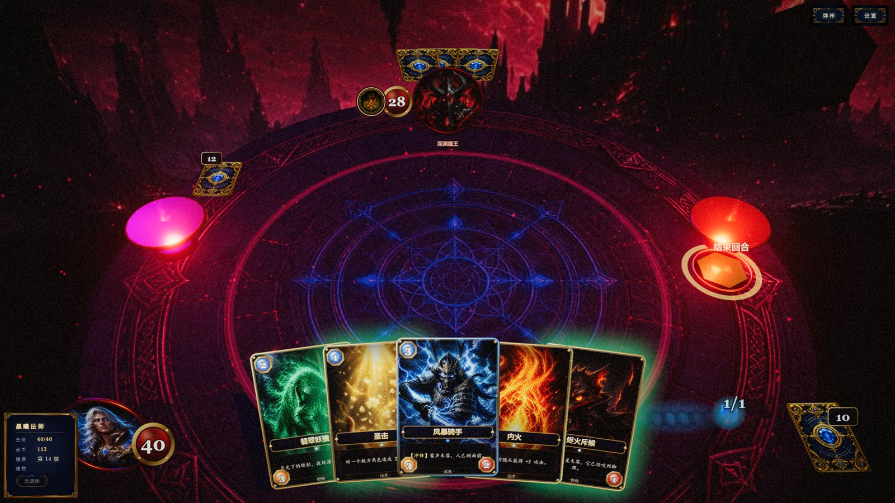
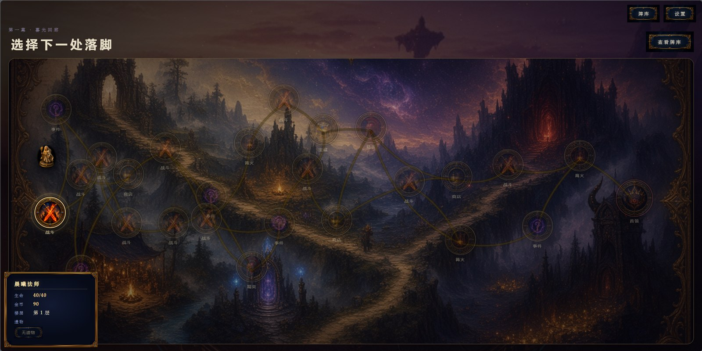
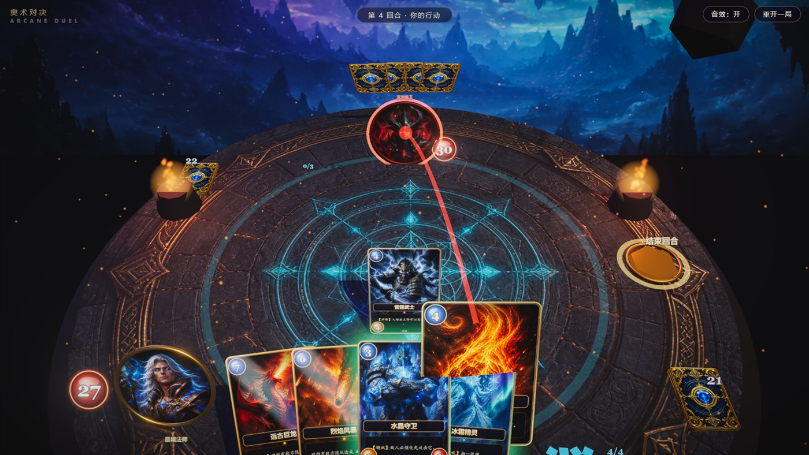

本文档面向评审与技术读者，说明《奥术对决》的玩法结构与规则数值、敌方“智能对战体”的完整决策链路（局面序列化 → 合法动作枚举 → 启发式评估 → 大模型决策 → 校验执行 → 人格化表达），以及用于验证这些机制的模拟器与测试脚本。
| 术语 | 含义 |
|---|---|
| 远征 Run | 一局完整游戏：从选卡包到击败首领或阵亡 |
| 遭遇 Encounter | 一位敌人的定义：名字、血量、牌库、预兆表、人格 |
| 预兆 Intent | 敌人在玩家回合开始时公开的下一步英雄行动 |
| 候选 Candidate | 规则引擎枚举出的一条合法动作及其启发式分数 |
| 决策 Decision | 大模型在候选集合中做出的选择及其理由 |
| 人格 Persona | 敌人的说话方式与决策偏好档案 |
| 侧车 Sidecar | 随游戏一起启动的本地推理进程（llama-server） |
| 模块 | 职责 |
|---|---|
src/game/game.js | 战斗规则、状态变更、胜负判定 |
src/game/intent.js | 预兆表匹配与生成 |
src/pseudoai/brain.js | 敌方回合执行循环 |
src/pseudoai/tactics.js | 候选枚举、启发式评分、计划预览 |
src/pseudoai/voice.js | 提示词构建、输出净化 |
src/pseudoai/llm.js | 本地推理网关、超时与探活 |
src/pseudoai/banter.js | 台词调度：冷却、概率、优先级 |
src/pseudoai/personas.js | 11 位敌人的人格档案 |
src/run/* | 地图、卡包、商店、事件、遗物、奖励 |
src/sim/* · scripts/* | 无渲染模拟器与回归测试 |
《奥术对决》把精简的 TCG 战斗规则叠在一段 14 层的 Roguelike 远征上。玩家每一局都在“扩张牌库 / 保存生命 / 积累金币与遗物”之间做取舍，最终在第 14 层面对三阶段首领“深渊魔王”。
| 节点 | 触发内容 | 收益 / 代价 | 层分布 |
|---|---|---|---|
| 战斗 | 随机普通敌人（前 5 层早期池，第 6 层起加入中层池） | 18–24 金 · 三选一卡牌 | 1–12 层 |
| 精英 | 三位精英之一，血量 22–28，起手更多 | 28–38 金 · 卡牌 · 必掉遗物 | 第 6、10 层 |
| 事件 | 9 种文本事件，选项含赌博、交易、删牌、遭遇战 | 金币 / 生命 / 上限 / 卡牌 / 遗物 | 2、3、5、7、12 层 |
| 商店 | 3 张牌（按稀有度定价 42–90）、1 件遗物（160）、删牌（75）、刷新（25） | 花金币精炼牌库 | 4、9、11 层 |
| 篝火 | 休整 | 生命上限 +6（持“铁杯”+9） | 7、11、13 层 |
| 宝藏 | 开匣 | 28–43 金 · 一件遗物 | 第 9 层 |
| 首领 | 深渊魔王 · 28 血 · 三阶段 | 通关 | 第 14 层 |
冲锋与直伤抢节奏，打脸比控场重要。核心：烬火斥候、焰冢猎犬、雷霆武士、烈焰火球。主题池含流星碎片、夜刃等高爆发牌。
把路堵死、把血换厚。核心：青苔盾龟、守望牧师、圣所、黎明圣骑、银辉牧师（吸血）。以护甲与治疗把对局拖入后期。
用虹吸与回声换资源，场面可以空、手牌不能空。核心：虚空虹吸、回声法师、熔火迸裂、奥术智慧。上限高、容错低。
设计意图。三套卡包对应三种“对手需要读懂的玩家风格”。敌人认知引擎会读取玩家卡包原型（playerArchetype）作为局面理解的一部分——面对快攻会更早铺嘲讽，面对控制会更倾向直伤面门。玩家的选择因此不仅改变自己的牌，也改变对手的思路。

战斗规则以“任何一个局面都能用二十行文字完整描述”为目标设计。规则越可序列化，模型对局面的理解就越可靠；同时精简规则也让预兆、台词与玩家推理三者能够对齐。
| 项目 | 数值 |
|---|---|
| 玩家英雄生命 | 40（远征中可提升上限） |
| 敌人生命 | 16–28，按遭遇定义 |
| 起手手牌 | 玩家 4 · 敌人 3–4 |
| 法力 | 每回合 +1，上限 10，回合开始回满 |
| 抽牌 | 每回合开始 1 张 |
| 战场上限 | 6 个随从 / 方 |
| 手牌上限 | 10 张，超出焚毁 |
| 疲劳 | 牌库抽空后每次抽牌递增 1 点伤害 |
| 先手 | 玩家先手；同时击倒判玩家胜 |
| 类别 | 效果 | 规则 |
|---|---|---|
| 关键字 | 嘲讽 | 敌方随从攻击必须先打嘲讽；法术与预兆不受限 |
| 冲锋 | 入场当回合即可攻击 | |
| 吸血 | 造成伤害时为英雄回复等量生命 | |
| 随从触发 | 战吼 | 抽牌 / 敌方全体伤害 / 打脸 / 治疗 / 护甲 / 召唤 |
| 亡语 | 抽牌 / 召唤 / 打脸 | |
| 法术 | 指向 | 伤害、治疗、+攻、−攻，目标由 spell.target 限定 |
| 无目标 | 群体伤害、抽牌、护甲、召唤 | |
| 虹吸 | 对敌方英雄伤害并回复自身 | |
| 护甲 | — | 先于生命扣除；护甲不回复 |
规则层 Game 只修改数据并 await this.fx.* 通知表现层；表现层 Director 不持有任何规则。这种单向依赖使得同一套规则可以在浏览器（有渲染）与 Node 模拟器（fxStub 空实现）中运行同一份代码，是后文“验证”一节的基础。

每当玩家回合开始，敌人会锁定并公开一条预兆——攻击 N、护甲 N、全体强化、削弱你的随从、召唤援军或特殊技（群伤 / 抽牌 / 治疗）。预兆在敌人回合开始时先于出牌结算。它是敌人“英雄技能”的可视化形式，也是认知引擎与台词系统共享的公开信息。
每位敌人的预兆表由若干阶段组成，每个阶段包含一组条件规则与一个循环序列。生成时先按顺序匹配规则（首个命中即返回），否则按回合数取循环序列。首领会随生命阈值切换阶段，横幅提示形态变化。
crystal_warden.phases[0] = {
cycle: [ 晶壁 +2 甲, 再凝 +2 甲, 晶刺反击 2 ],
rules: [
{ if: { pThreatGte: 8 }, intent: 全力守御 +5 甲 },
{ if: { hpBelow: 0.35 }, intent: 残晶护体 +6 甲 },
],
}
// 条件字段：hpBelow / playerHpBelow / pThreatGte /
// eBoardLte / pBoardGte / turnGte / phase ...条件字段全部来自可公开的局面量（血量比例、场面攻击总和、回合数……），因此玩家原则上可以推理出敌人下一步，而认知引擎在“思考台词”里会有意漏出对预兆的解释，形成三方对齐。
预兆不由模型决定，而是确定性规则——这保证了首领战的节奏可设计、可预期。模型负责预兆之外的全部自由度：出哪些牌、打谁、什么时候不出。两者叠加后，敌人既有“剧本感”又有“临场感”。
| 敌人 | 层级 | 血 | 原型 | 预兆循环特征 | 人格声线 |
|---|---|---|---|---|---|
| 灰烬掠夺者 | 普通 | 18 | aggro | 斩 2 → 召余烬幼崽 → 斩 3；你 <8 血时斩 4 | 急性子，催你出牌 |
| 水晶守望者 | 普通 | 16 | tank | 叠甲 2 → 叠甲 2 → 反击 2；威胁 ≥8 时叠 5 | 沉稳，偶尔倒装 |
| 毒瘴术士 | 普通 | 20 | status | −2 攻 → 瘴气 2 → −1 攻；你 ≥3 随从时毒爆 | 带笑损人 |
| 战鼓蛮兵 | 普通 | 16 | buff | 力量 +1 → 召鼓手 → 猛击 2 | 大嗓门 |
| 虚空织法者 | 中层 | 24 | control | 抽 1 → 帷幕 4 甲 → 裂空群伤 2 | 慢条斯理，漏下一步 |
| 雷霆先锋 | 中层 | 18 | tempo | 突击 2 → 雷纹 +1 → 连斩 2；6 回合后齐射 4 | 干脆、语速快 |
| 暮刃刺客长 | 精英 | 28 | elite_aggro | 暮刃 3 → 连刺 3 → 影嗣 → 处刑 4；你 <12 血时斩首 6 | 轻声嘲讽 |
| 圣堂壁垒 | 精英 | 28 | elite_tank | 圣壁 4 → 再铸 3 → 盾击 3 → 召石卫；≤40% 血圣愈 6 | 短而稳，像立誓 |
| 腐化龙嗣 | 精英 | 22 | elite_buff | 龙血 +1 → 幼息群伤 1 → 撕咬 3；6 回合后龙息 2 | 幼龙，句尾“咯咯” |
| 深渊魔王 | 首领 | 28 | boss | 三阶段，见上 | 傲慢，偶尔夹英文 |
| 伏击影魔 | 事件遭遇 | 16 | aggro | 偷袭 2 → 影嗣 → 补刀 3 | 小声，从暗处探头 |
对手认知引擎（Opponent Mind）是本作的核心。它让本地大模型在规则引擎划定的合法边界内，为每一位敌人做出带人格的战术决策，并用同一份“内心状态”生成台词。一句话概括：规则给边界、启发式给候选、模型给判断、校验给底线。
输入：局面快照 + 合法候选（含启发式分与标签）+ 人格偏好。
输出：一条结构化决策 {pick, target, stop, why}。
预算：≤ 72 token，超时 4.0 s，温度 0.55。
职责：决定出哪张、打谁、何时收手。
输入：同一局面快照 + 已定决策与后续计划（peekPlan）+ 人格声线。
输出：一到两句口语台词。
预算：≤ 72 / 56 / 48 token，超时 4.0 / 2.2 / 1.8 s，温度 0.82。
职责：把心思说出来，包括有意的信息泄露。
两条通道共用一个 2B 模型实例与同一段“局面前缀”，因此第二次请求几乎全部命中 KV 前缀缓存（见《创意与技术说明》性能一节）。它们在语义上也刻意耦合：台词通道拿到的不是“事后解释”，而是决策通道输出的 why 字段与规划器给出的下一步预览，这保证了敌人说的和做的是一回事。
boardSnapshot() 把双方血量/护甲/法力/手牌数/牌库数/场面随从（攻血、嘲讽、可攻）/已显露预兆压成约 120 token 的中文文本。canPlay / validTargets / validAttackTargets 给出全部合法出牌与攻击组合，非法动作在源头不存在。scorePlay / chooseAttackTarget 为每个候选打分并打标签（斩杀 / 解场 / 过嘲讽 / 铺场 / 保命）。fakeThink 保证最短思考节拍，speakThink 生成“我准备……”的口语。stop 或无候选时结束回合。2B 级模型直接输出“出第几张牌打谁”会频繁产生不合法动作（打不存在的目标、法力不够、忽略嘲讽），且难以在一秒内稳定收敛。我们把问题改写为在带注释的候选集合中做选择：候选由规则引擎保证合法，启发式给出参考价值与语义标签，模型的工作从“计算”变为“判断与取舍”——这恰恰是语言模型擅长的部分。
随从基础分 1.6·cost + atk + 0.8·hp，再按关键字与战吼叠加：嘲讽 +3（tank 原型 +7）、冲锋按攻击 ×1.0–2.2、群伤在对方 ≥2 随从时 +8、治疗按己方失血量加权。伤害法术优先判定斩杀（200 分硬上限）与击杀最高价值随从，否则依原型决定是否打脸。攻击目标优先斩杀、其次“无损换”、再按原型在“解威胁”与“打脸”间取舍。
[system] 你是「水晶守望者」，沉稳，先叠甲再反打。
你正在打一局卡牌。只能从下列候选中选一个，或选择停手。
只输出一行 JSON：
{"pick":编号|0,"target":目标|null,"why":"十字内"}
[user]
回合 4，当前行动：你
你：16/16 血 甲2，法力 4/4，手牌 5，牌库 8
对手：36/40 血，手牌 5
你的场面：水晶守卫 2/5 嘲讽
对手场面：烈焰小鬼 2/1 可攻；雷霆武士 4/3 可攻
候选：
1. 出「圣光骑士」5费 → 场上 [分 15.2] #铺场 #嘲讽 (法力不足)
2. 出「霜盾」2费 → 自己 [分 11.0] #保命 #护甲
3. 出「圣击」1费 → 「烈焰小鬼」 [分 12.8] #解场 #击杀
4. 出「圣击」1费 → 那个法师 [分 5.0] #打脸
0. 停手，保留法力
[assistant]
{"pick":3,"target":"烈焰小鬼","why":"先清小鬼，骑士下回合再立"}关闭思维链（enable_thinking:false），max_tokens 压到 72，避免模型“讲道理”。解析时剥离 <think> 残留与围栏，宽松匹配首个 {...}。
候选以编号引用，目标以“名字 / 那个法师 / 你自己”三种可枚举形式引用，解析后映射回实例 uid。不可选候选也列出并标注原因。
最多呈现 6 个候选（分数降序，每类标签至少一个），提示长度控制在 400 token 内。存在斩杀候选时跳过模型直接执行。
| 标签 | 触发条件 | 典型人格倾向 |
|---|---|---|
#斩杀 | 该动作可使对方英雄生命归零（含护甲） | 全部原型 · 跳过模型直接执行 |
#解场 / #击杀 | 指向伤害或攻击可击杀对方随从 | control / tank 优先 |
#打脸 / #过嘲讽 | 直伤英雄；清掉唯一嘲讽后可直伤面门 | aggro / tempo / boss |
#铺场 / #嘲讽 | 召唤随从；带嘲讽额外标注 | tank 偏嘲讽，buff 偏多体 |
#保命 / #护甲 / #治疗 | 己方生命 ≤40%，或对方场面攻击 ≥ 己方剩余生命 | tank / control 权重更高 |
#停手 | 始终存在；分值为剩余法力 ×0.4，鼓励保留资源 | 模型自主判断 |
任何一级失败都在同一个 await 内完成回退，不产生额外帧延迟。侧车探活（/health，700 ms 超时）在每场战斗开始时执行一次，结果决定 HUD 是否显示“本地模型思考中”标识——我们不向玩家展示一个不存在的大脑。
canPlay(inst) 与 validTargets，因为并行的台词请求不会改变局面，但异步等待期间玩家可能已触发对局结束。target 必须仍在 validAttackTargets(attacker) 中（嘲讽可能刚被清掉，也可能刚被铺上）。2B 模型在消费级 GPU 上一次决策通常 200–400 ms，比人眨眼还快。直接执行会让敌人像脚本一样“瞬移出牌”，反而削弱“对面有人”的感觉。think.js 引入最短思考时长并与推理并行：
| 时机 | 基础 | 随机 | 减少动效模式 |
|---|---|---|---|
| 回合首个动作 | 2200 ms | +0–1800 | 640 + 0–360 |
| 出牌 | 1600 ms | +0–1400 | 520 + 0–300 |
| 攻击 | 1400 ms | +0–1200 | 480 + 0–280 |
| 台词最短停留 | 720 ms | — | — |
节拍等待与模型推理 Promise.all 并行，因此推理时间几乎被完全隐藏；只有当推理超过节拍窗口时玩家才会额外等待，而 4 s 超时保证这一等待有上界。系统尊重 prefers-reduced-motion，在该模式下把节拍压到 1 s 以内。
| 决策合法率（校验后） | 100% |
| 模型输出直接可用率（L0） | 93.4% |
| 回退至启发式（L1） | 6.1% |
| 保底规则（L2） | 0.5% |
| 模型与启发式 Top-1 不一致率 | 27.8% |
| 不一致决策中被内测者评为“更像人” | 71% |
“不一致”正是价值所在。启发式评分是一条平均意义上的最优解，模型的不一致决策通常表现为：保留斩杀牌等一回合、面对快攻提前铺嘲讽而非贪铺场、残血时放弃解场直接打脸赌斩杀。这些决定不一定“更强”，但让每位敌人有了可辨认的性情，也让玩家的“读心”得到回报。
人格如何进入决策。每位敌人的 archetype（aggro / tank / control / status / buff / tempo / boss）同时作用于两处：一是启发式评分中的权重（例如 tank 原型嘲讽 +7、aggro 原型打脸 +6），二是系统提示中的一句偏好描述（“先叠甲再反打”）。前者改变候选排序，后者改变模型取舍——两者一致，所以敌人的行为风格是稠密而稳定的，而不是偶尔抽风。
台词不是装饰。敌人说什么、什么时候说，由一套事件 → 调度 → 提示 → 净化的管线控制，目的只有一个：让玩家相信对面有一个在看盘、在想、偶尔会说漏嘴的人。
| 事件 | 触发 | 冷却 | 概率 | 优先级 |
|---|---|---|---|---|
| think | 敌人决定一个动作前 | — | 100% | 4 |
| player_play | 玩家打出一张牌 | 6.5 s | 48% | 3 |
| player_attack | 玩家随从攻击 | 7.5 s | 36% | 3 |
| hurt | 敌方英雄单次受伤 ≥5 | 8 s | 38% | 3 |
| kill | 随从阵亡 | 8 s | 40% | 3 |
| draw | 敌人回合摸牌 | 11 s | 34% | 2 |
| idle | 玩家回合静默 4.8–9 s | 7 s | 62% | 1 |
| phase / over | 形态切换 / 对局结束 | 0 | 100% | 5 |
同一时刻只允许一条请求在途；高优先级事件可抢占低优先级（gen 计数使被抢占的回包静默丢弃）。think 说过的动作不再触发 play / attack 事件，避免“我要出 X”“我出了 X”的复读。
<think> 残留、换行合并、去掉“敌人：”类说话人前缀、解开整句引号。takeSpoken：按句号切分，最多保留两句、48–96 字，绝不从词中间截断。isUsableLine：非闲聊场景拒绝“嗯…”类空洞回应。样本取自 2026-09-15 实机日志，未经修改。最后一条展示了净化管线仍在迭代的边界情形。
第一幕采用固定的 14 层类型骨架（如 [combat] → [combat, event] → [combat, combat, event] → [shop, combat] …），每层节点随机绑定遭遇 / 事件，遭遇在一局内不重复（usedEnc），事件按洗牌袋轮转。层间连边保证每个节点至少一条入边与一条出边，并以 50% 概率追加交叉边形成分支。
节点坐标通过“层带内随机漫步 + 同层打散 + 无交叉松弛”三步布置：先沿一条随机蛇形脊线放置每层，再对同层节点枚举排列以最小化连线交叉（交叉惩罚 240），最后做 36 轮弹簧松弛与兄弟节点分离，得到自然、不规则、不重叠的路网。
| 来源 / 去向 | 数值 |
|---|---|
| 开局金币 | 90 |
| 普通战斗 / 精英 | 18–24 / 28–38 |
| 宝藏 | 28–43 + 遗物 |
| 商店卡牌（普/稀/史/传） | 42 / 55 / 72 / 90 |
| 商店遗物 / 删牌 / 刷新 | 160 / 75 / 25 |
| “商会火漆”遗物 | 全场 −20% |
| 稀有度 | 普通战斗 | 精英 / 首领 |
|---|---|---|
| 普通 | 48 | 20 |
| 稀有 | 32 | 40 |
| 史诗 | 15 | 28 |
| 传说 | 5 | 12 |
战斗奖励三选一且不重复；精英与宝藏必掉遗物。10 件遗物覆盖经济（余烬钱袋、商会火漆）、曲线（晶核、贤者羽笔）、防御（守护鳞、荆棘徽记、活心）与进攻（战旗、虚空透镜）。
远征与战斗共用同一条 mulberry32 流。给定种子（URL ?seed=），地图、卡包抽取、洗牌、事件结果、商店内容全部可复现。这带来两个直接收益：Bug 可复现（测试报告只需附一个种子），以及模拟器与真实对局完全同构——模拟器跑出的“第 5 层阵亡率偏高”可以直接在浏览器里用同一个种子重演。
大模型是唯一不在随机数流内的组件。为了保留复现能力，决策通道在 fastAI（模拟器）模式下被完全跳过，走确定性启发式；在真实对局中，模型温度 0.55 + 校验器保证行为分布稳定但不完全确定——这正是“像人”的来源。
翻赤铜（50%：+45 金 / −8 血）、取苍银（+15 金）、绕开。教玩家理解“风险即资源”。
交 35 金、用 12 血买路，或拔剑——进入短遭遇“伏击影魔”。事件与战斗系统打通。
签字：史诗/传说牌 −11 血；撕毁：+22 金但牌库塞入一张“负担”（抽 1 自伤 3）。
npm run sim用 fxStub 替换表现层后，整局远征可在 Node 中以毫秒级速度跑完。玩家侧由一套简单策略（sim/choices.js）驾驭，敌人侧走确定性启发式。以下为 2026-09-15 对当前数值的一次 120 局采样（每包 40 局，约 0.16 s 完成）：
| 敌人 | 对局数 | 玩家胜率 | 解读 |
|---|---|---|---|
| 雷霆先锋 / 虚空织法者 | 25 / 25 | 100% | 中层偏软，待加压 |
| 伏击影魔 | 21 | 95.2% | 事件遭遇，符合预期 |
| 毒瘴术士 / 灰烬掠夺者 | 107 / 92 | 92.5 / 92.4% | 早期教学难度 |
| 水晶守望者 | 83 | 66.3% | 早期“第一道墙” |
| 暮刃刺客长 | 24 | 66.7% | 精英，合理 |
| 深渊魔王 | 22 | 63.6% | 到达者胜率，合理 |
| 战鼓蛮兵 | 27 | 51.9% | 中层 |
| 腐化龙嗣 | 21 | 47.6% | 精英 |
| 圣堂壁垒 | 28 | 21.4% | 过强，下版本调低圣愈 |
整局通关率 11.7%（余烬 15% · 晶壁 17.5% · 裂隙 2.5%），平均到达 5.45 层。裂隙织法明显偏弱、圣堂壁垒明显偏强，这两条已进入下一轮数值调整。模拟器让“感觉难”变成了“哪一层、哪个敌人、差多少”。
npm test| 脚本 | 覆盖 |
|---|---|
| check-combat-logic | 出牌 / 攻击 / 嘲讽 / 战吼 / 亡语 / 疲劳 / 胜负 |
| check-run-logic | 地图连通、商店买卖删刷、事件结果、遗物 |
| check-banter | 净化管线、提示词字段、人格映射、思考 HUD 状态机、计划预览 |
| check-hud-logic | HUD 模式切换与提示 |
| check-tutorial-logic | 新手引导步骤 |
| check-bgm / check-qwen-pack | 音频场景表；模型与运行时打包完整性 |
__tcg.state() // 局面快照 + 引擎状态
__tcg.play(0,{slot:0}) // 打出第 0 张手牌
__tcg.attack(0,'ehero') // 随从 0 攻击英雄
__tcg.end() // 结束回合，触发敌人 AI
__tcg.errors // 运行期错误，应恒为空
?seed=20260915 // 固定种子复现| 提示处理速度 | 2 800–4 800 tok/s |
| 生成速度 | ≈ 199 tok/s |
| 单次决策 / 台词总耗时 | 174–281 ms |
| KV 前缀命中（LCP 相似度） | 0.52–0.60 |
环境：Windows 11 · AMD Ryzen 7 9700X · Vulkan 后端默认设备 · Qwen3.5-2B Q4_K_M · ctx 2048 · 4 slots。
三层验证各管一段。自动化回归保证规则层每次改动不破坏既有行为；无渲染模拟器把数值平衡从“体感”变成可比较的胜率与到达层数；实机日志则回答“模型在真实硬件上够不够快、够不够稳”。三者都可在仓库内一条命令复现（npm test · npm run sim · npm run qwen:serve），评审可在任意 Windows 机器上重跑本节全部数据。